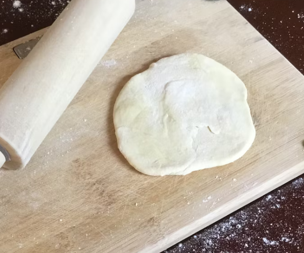

About Flour & Crust

Welcome to Flour & Crust!
Established in 2016, Flour & Crust is a family-run artisan bakery located in the heart of Cape Town. We are passionate about crafting delicious breads, pastries, and cakes using traditional techniques and the finest local ingredients.
Our Values
- Quality: Every product is made fresh daily with care.
- Community: We support local farmers and suppliers.
- Creativity: Our bakers love experimenting with new recipes and flavors.
- Sustainability: We use eco-friendly packaging and minimize food waste.

Meet Our Team
Our skilled bakers and friendly staff are dedicated to making your visit memorable. Whether you're picking up your morning loaf or ordering a custom cake, we're here to help!
Why Choose Us?
From classic sourdough to decadent pastries, our menu offers something for everyone. We believe in honest baking and warm hospitality.
Visit us and taste the difference!